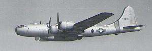
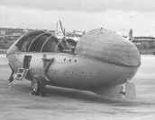

|
More
SB-29 Air Rescue, kadena AFB, Circa 1952 
The large object attached to the bottom is not an atom or any other
kind of bomb. It's an A3 lifeboat (below), designed to be dropped
near aircraft or crew downed at sea.

Dewey Thomas wrote: "Flt. D SB29's made
the missions to Korea, first to T.O. and last to land -- hopefully carrying
the boat all the way, both ways!"
All photos this page, copyright 2001 by Dewey Thomas |
(Below) SA-16 air rescue amphibian taking off.

(Below) Flight C SA 16 & chopper.
 To see Dewey's bomber escort photos, [CLICK
HERE].
To see Dewey's bomber escort photos, [CLICK
HERE].
|